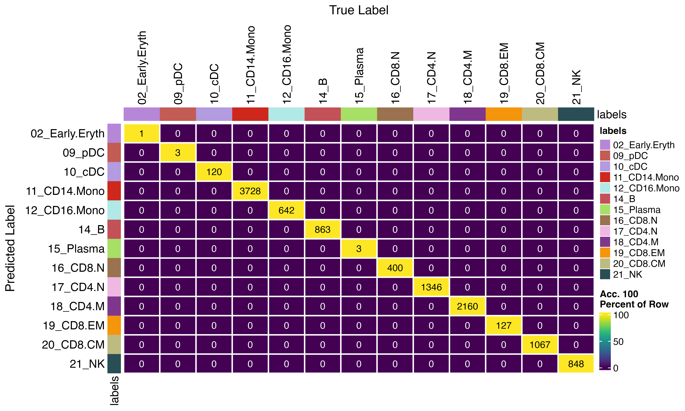
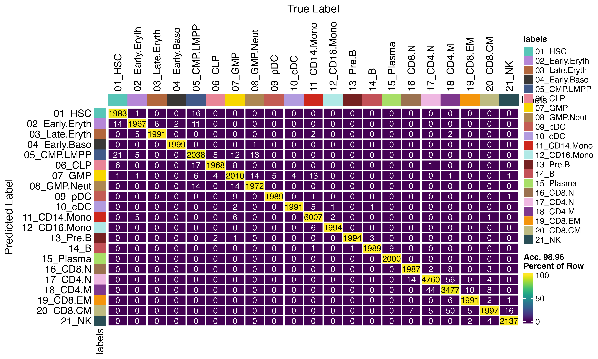

How to use viewmastR with large query objects
2024-12-10
BigQuery.RmdInstalling Rust
First you need to have an updated Rust installation. Go to this site to learn how to install Rust.
Installing viewmastR
You will need to have the devtools package installed…
devtools::install_github("furlan-lab/viewmastR")Build the model and infer for small dataset (not using chunks and parallelization)
This is also covered elsewhere
results <- viewmastR(seu, seur, ref_celldata_col = "SFClassification", selected_features = vg, max_epochs = 4, train_only = T)
seu<-viewmastR_infer(seu, results[["model_dir"]], vg, labels = levels(factor(seur$SFClassification)), batch_size = 250)
DimPlot(seu, group.by = "viewmastR_inferred", cols = seur@misc$colors)Build the model and infer for large dataset (dividing the query into chunks and using parallelization)
By using chunks and workers, you can infer from the model only chunks at a time using multiple workers in parallel.
options(future.globals.maxSize = 16 * 1024^3)
seu<-viewmastR_infer(seu, results[["model_dir"]], query_celldata_col = "viewmastR_inferred_parallel", vg, labels = levels(factor(seur$SFClassification)), chunks = 4, workers = 4)
DimPlot(seu, group.by = "viewmastR_inferred_parallel", cols = seur@misc$colors)We see no difference if parallelization is used
confusion_matrix(pred = factor(seu$viewmastR_inferred), gt = factor(seu$viewmastR_inferred_parallel), cols = seur@misc$colors)
Bigger dataset
By optimising chunk size, workers and batch size, you can achieve faster results on big datasets. Here we are just inferring back on the larger reference set (because it is larger, but this is not advisable in normal practice)
seur<-viewmastR_infer(seur, results[["model_dir"]], query_celldata_col = "viewmastR_inferred_parallel", vg, labels = levels(factor(seur$SFClassification)), chunks = 20, workers = 16, batch_size = 3000)
DimPlot(seur, group.by = "viewmastR_inferred_parallel", cols = seur@misc$colors)
confusion_matrix(pred = factor(seur$SFClassification), gt = factor(seur$viewmastR_inferred_parallel), cols = seur@misc$colors)